Neste tutorial, vamos explorar como utilizar low code inteligência artificial desenvolvimento para criar aplicações incríveis sem a necessidade de gastar com serviços pagos. Aprenda a configurar o Bolt.AI de forma gratuita no seu Windows e comece a desenvolver de maneira eficiente e econômica.
Passo 1: Introdução e visão geral 🚀
O desenvolvimento utilizando low code e inteligência artificial é uma tendência crescente. Com a combinação dessas tecnologias, é possível criar aplicações robustas de forma rápida e eficiente. Neste guia, vamos focar em como configurar o Ollama para que você possa explorar essas possibilidades no seu ambiente Windows.
Este processo é acessível, mesmo para quem não tem experiência prévia em programação. Com as ferramentas certas, você poderá desenvolver aplicações que utilizam inteligência artificial sem complicações.
Passo 2: Download e instalação do Ollama 💻
A primeira etapa é fazer o download do Ollama. Acesse o site oficial ollama.com e procure pela versão para Windows. Após o download, execute o instalador.
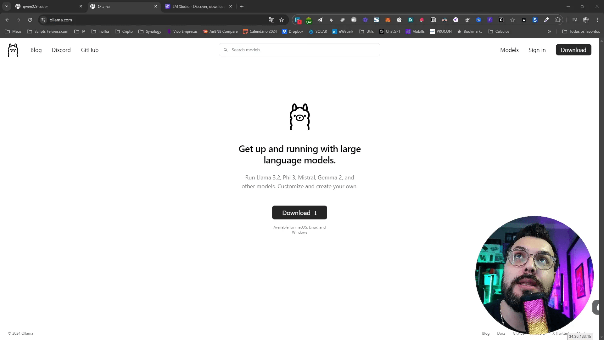
Uma vez instalado, o Ollama aparecerá próximo ao relógio no canto inferior direito do seu Windows. Clique nele para verificar se está funcionando corretamente. Você deve ver opções como Restart, Update e View Logs.
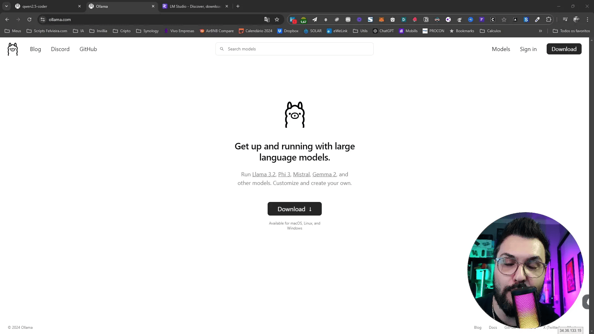
Passo 3: Configuração do PowerShell ⚙️
Após a instalação do Ollama, o próximo passo é configurar o PowerShell. Abra o menu de pesquisa do Windows e digite “PowerShell”. Clique com o botão direito e selecione “Executar como administrador”.
Uma vez no PowerShell, você deve digitar “ollama” para verificar se a instalação foi bem-sucedida. Se tudo estiver correto, você verá uma lista de comandos disponíveis.
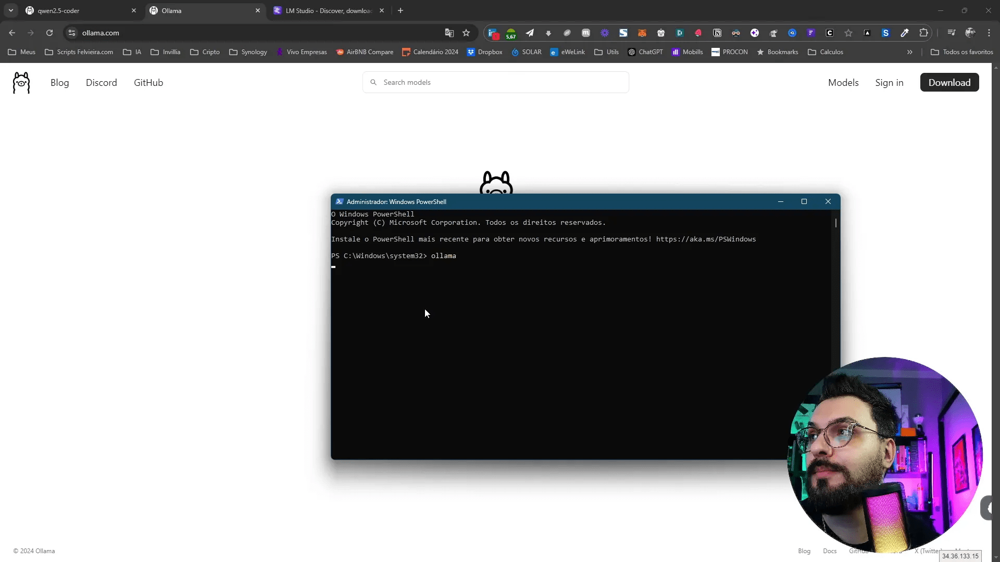
Passo 4: Instalação do Docker Desktop 🐳
O Docker é uma ferramenta essencial para criar ambientes isolados para suas aplicações. Para instalar o Docker Desktop, acesse o site oficial e faça o download da versão para Windows.
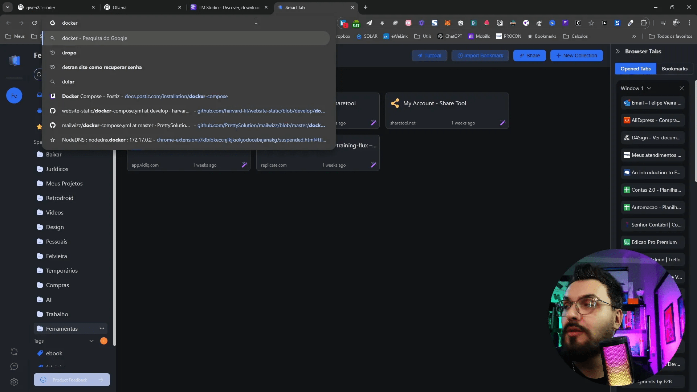
Após o download, execute o instalador e siga as instruções. O Docker criará um ambiente que permitirá que você execute seus containers sem problemas de permissão.
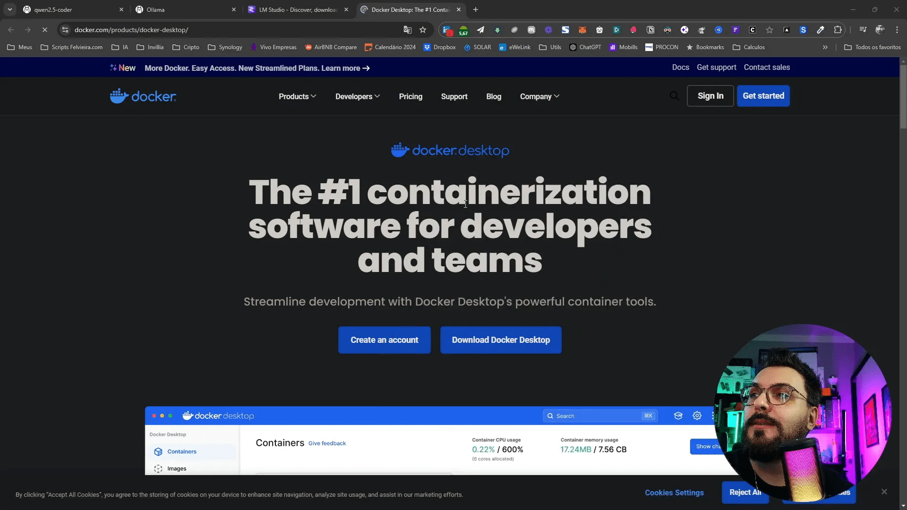
Quando o Docker Desktop estiver em execução, você verá uma interface que informa que está online. Neste ponto, você pode começar a configurar seus containers para o desenvolvimento.
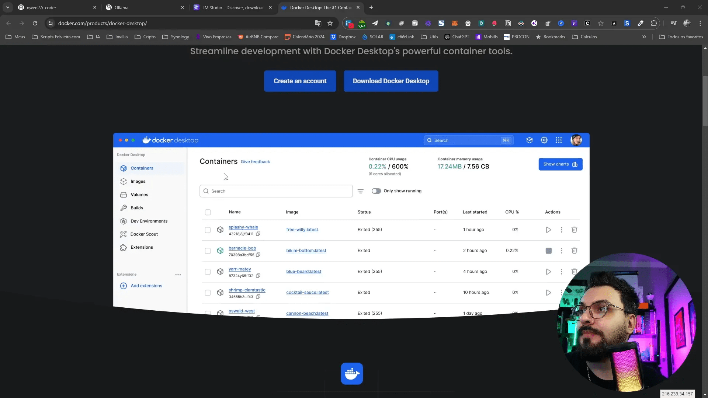
Passo 5: Configuração do VS Code 🛠️
Para iniciar a configuração do Visual Studio Code (VS Code), primeiro abra o aplicativo. Se você ainda não o possui, faça o download em code.visualstudio.com.
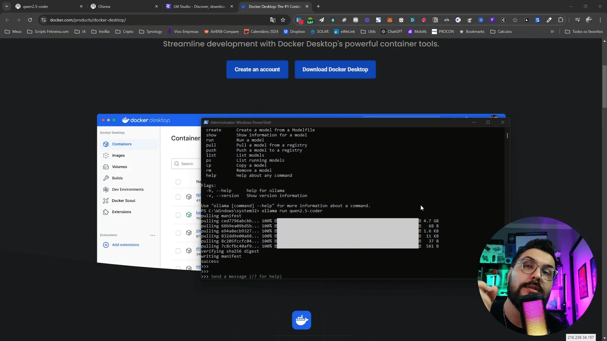
Agora no seu power shell deverá rodar o comando pra baixar a llm gratuita que vamos usar no Ollama e no bolt.new Local.
ollama run nome da llm escolhida
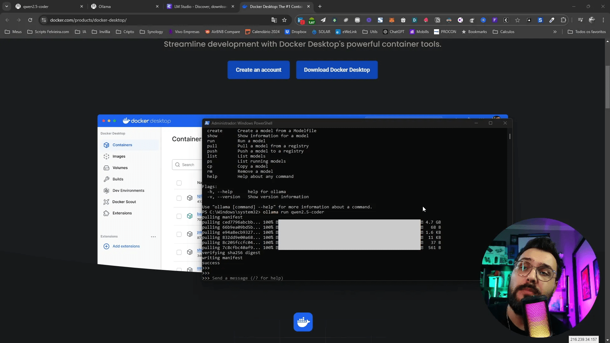
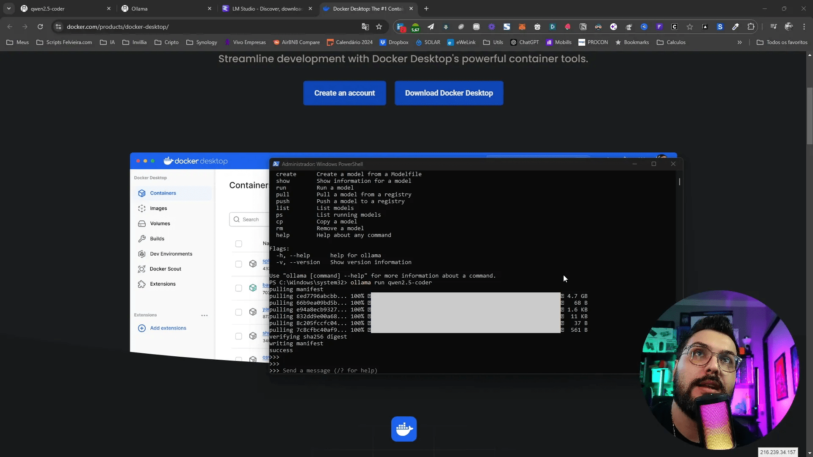
Agora faça download do repo do bolt.new local, descompacte em uma pasta e abra ela no visual Studio Code. Abra o terminal no VSCode e digite os comandos abaixo do docker build e do docker-compose up.
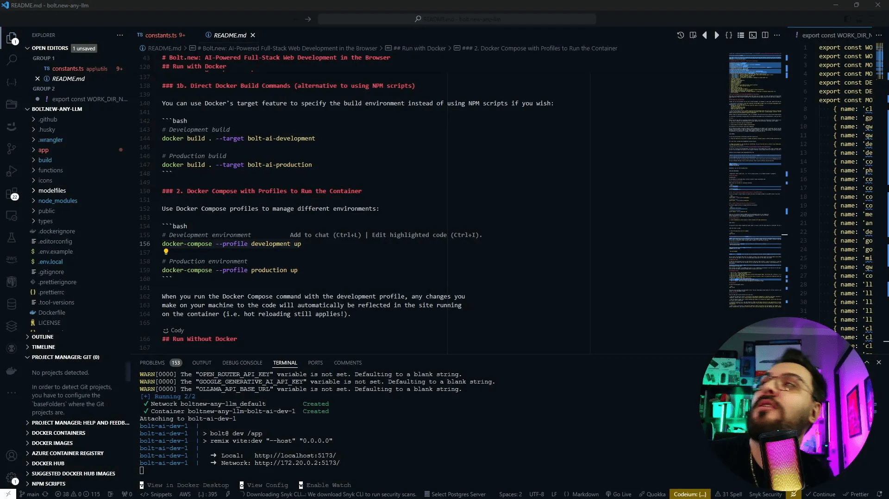
Passo 6: Aumento contexto do LLM 🌍
Como o bolt local com ollama nao gera as pastas pela limitacaod e contexto da LLm, temos que aumentá-lo.
Entre na pasta que baixou o fork do bolt.new e dentro dessa pasta, crie subpasta chamada model_files. A pasta model_files será usada para armazenar os modelos de IA que você irá criar.
Passo 7: Configuração do modelo de IA 🤖
Agora que temos o ambiente configurado, é hora de configurar o modelo de IA. Para isso, você precisará criar um arquivo de configuração para o modelo que deseja usar. Abra o VS Code e crie um novo arquivo chamado Qwen2.5Coder dentro da pasta model_files.
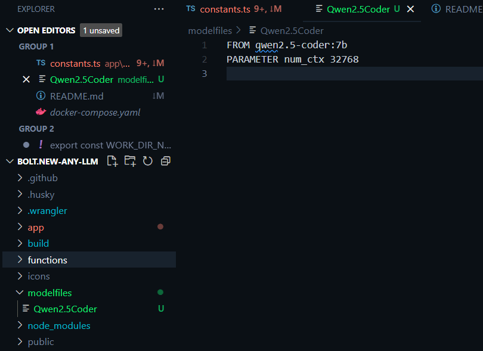
Dentro desse arquivo, você deve especificar os parâmetros do modelo. Um exemplo de configuração pode incluir o número de tokens, a arquitetura do modelo, e quaisquer hiperparâmetros que você deseja ajustar.
FROM qwen2.5-coder:7b
PARAMETER num_ctx 32768
Salve o arquivo após a edição. Essa configuração permitirá que o modelo tenha um desempenho otimizado para as suas necessidades de desenvolvimento.
Passo 8: Testando a primeira execução 🧪
Com tudo configurado, é hora de testar a sua aplicação. Atualize a interface e veja a llm instalada listada no dropdown do Ollama.
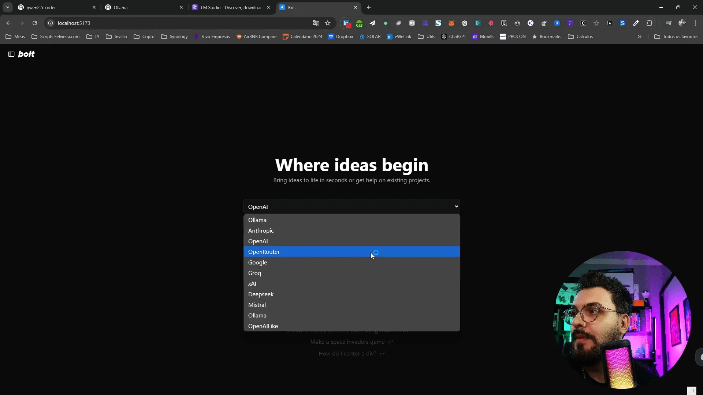
Se ocorrerem erros, verifique as configurações do modelo e os pacotes instalados. É comum que erros de importação ou configuração de ambiente causem falhas na execução.
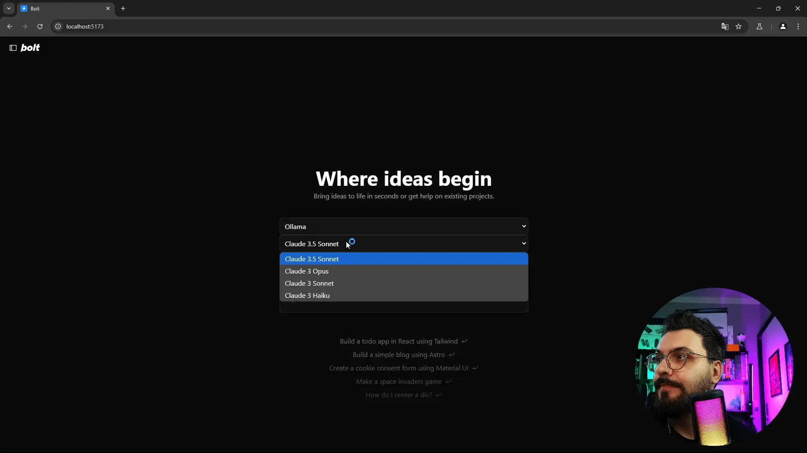
Após a execução bem-sucedida, você pode começar a interagir com o modelo de IA, testando diferentes entradas e verificando as respostas geradas. Essa é uma parte emocionante do desenvolvimento com low code inteligência artificial desenvolvimento, onde você pode ver resultados em tempo real.
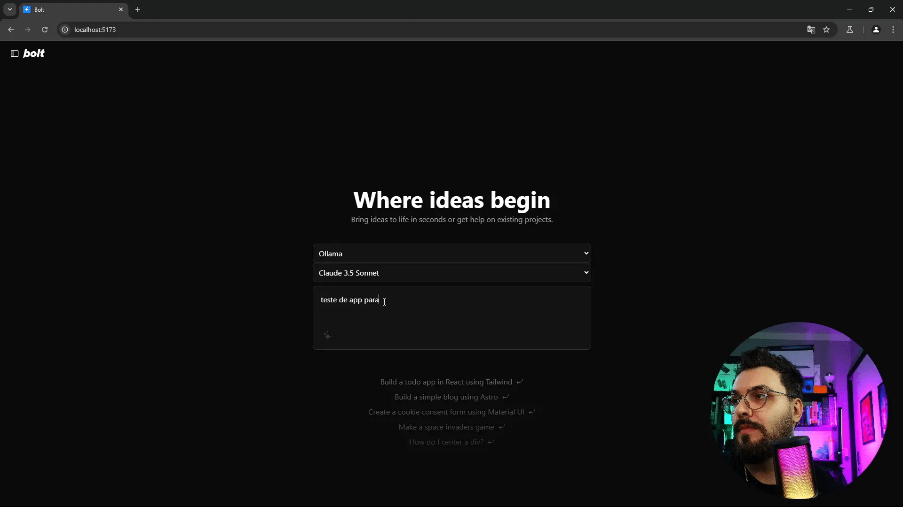
Passo 9: Resolução de problemas comuns ⚠️
Durante o desenvolvimento com low code e inteligência artificial, é comum encontrar alguns problemas. Aqui estão algumas soluções para os desafios mais frequentes:
- Problemas de configuração: Verifique se o arquivo .env está corretamente nomeado. Ao usar o Docker, ele deve ser denominado .env e não local.env.
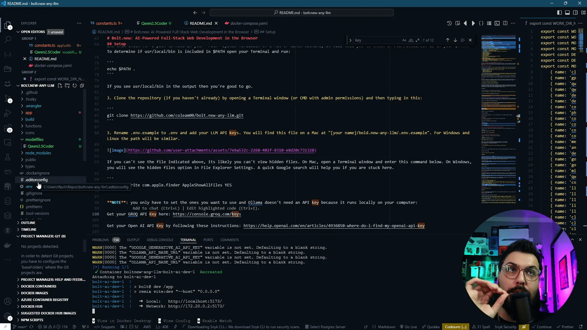
- Erros de importação: Se você encontrar erros relacionados a pacotes, certifique-se de que todas as dependências estão instaladas. Execute pip install -r requirements.txt para garantir que tudo esteja atualizado.
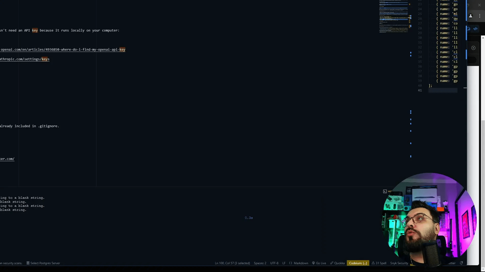
- Desempenho lento: Se a aplicação estiver lenta, verifique se a Economia de Energia está desativada. Configurações de energia podem afetar o desempenho do seu sistema.
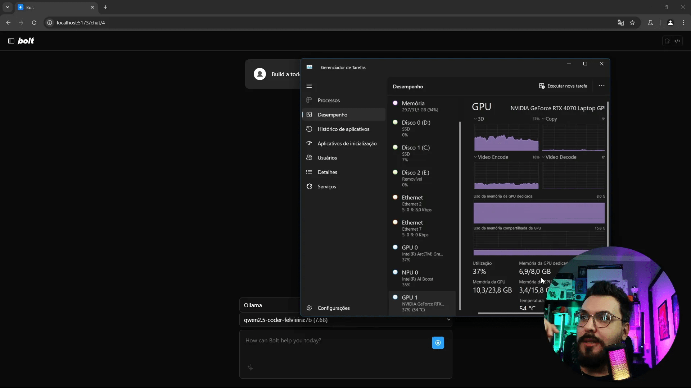
Esses são apenas alguns dos problemas que você pode encontrar. A chave é ser paciente e investigar as mensagens de erro que aparecem. A prática leva à perfeição!
Passo 10: Conclusão e dicas finais 🎉
Ao final deste guia, você deve estar confortável com o uso de ferramentas de low code e inteligência artificial. O desenvolvimento pode parecer desafiador no início, mas com a prática, você se tornará mais eficiente.
Algumas dicas para continuar sua jornada:
- Pratique regularmente: Quanto mais você pratica, mais você aprende. Tente criar pequenos projetos para aplicar o que aprendeu.
- Participe de comunidades: Junte-se a fóruns e grupos de discussão. Compartilhar suas experiências e aprender com os outros é extremamente valioso.
- Explore novas ferramentas: O ecossistema de low code e IA está sempre evoluindo. Pesquise e experimente novas ferramentas que possam facilitar seu desenvolvimento.
Com essas dicas, você estará no caminho certo para se tornar um desenvolvedor habilidoso em low code e inteligência artificial. Boa sorte!
Passo 11: Links úteis para desenvolvedores 🔗
Aqui estão alguns links que podem ser úteis em sua jornada de desenvolvimento:
- Ollama – Página oficial
- Visual Studio Code – Download
- Docker – Página oficial
- PyPI – Repositório de pacotes Python
- Stack Overflow – Comunidade de desenvolvedores
Esses recursos fornecerão suporte adicional enquanto você continua a desenvolver suas habilidades.
Passo 12: FAQ ❓
1. O que é low code?
Low code é uma abordagem de desenvolvimento que permite criar aplicativos com pouca ou nenhuma codificação. Ele utiliza interfaces visuais e componentes pré-construídos para facilitar o processo.
2. Preciso ser um programador para usar ferramentas low code?
Não! Ferramentas de low code são projetadas para serem acessíveis a todos, mesmo aqueles sem experiência em programação. No entanto, ter algum conhecimento básico pode ajudar.
3. Como a inteligência artificial se integra ao desenvolvimento low code?
A inteligência artificial pode ser incorporada em aplicações low code para automatizar processos, analisar dados e melhorar a experiência do usuário, tudo isso sem a necessidade de codificação complexa.
4. Quais são alguns exemplos de ferramentas low code?
Algumas ferramentas populares incluem Mendix, OutSystems, Bubble e, claro, Ollama. Cada uma oferece recursos únicos para atender a diferentes necessidades de desenvolvimento.
5. Onde posso encontrar mais recursos sobre low code e IA?
Além dos links úteis mencionados anteriormente, você pode buscar cursos online, tutoriais e webinars que focam em low code e inteligência artificial para expandir seu conhecimento.